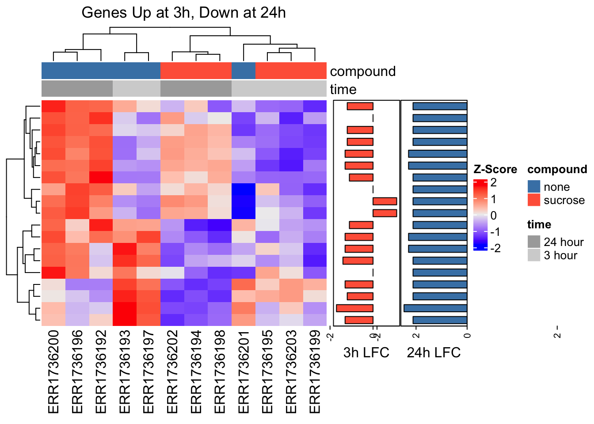
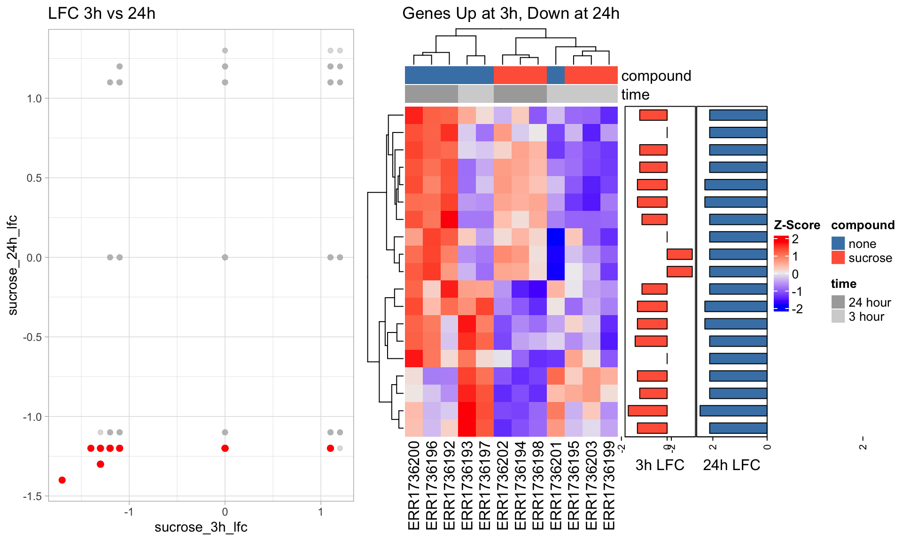
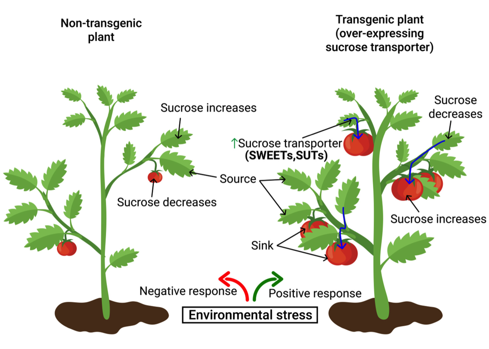
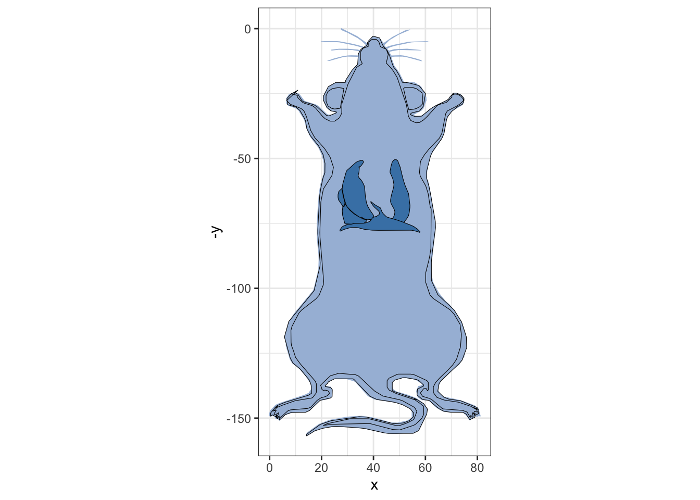
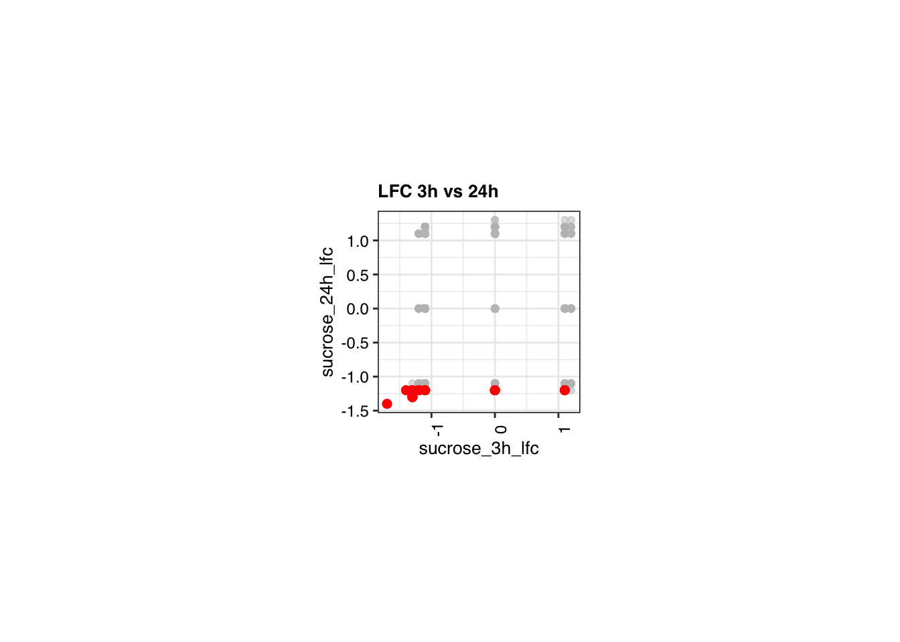
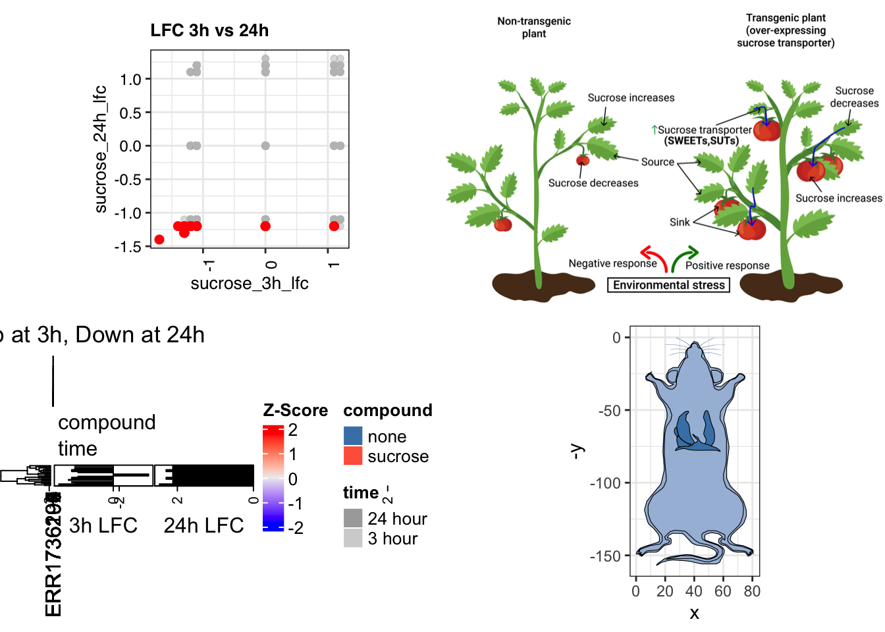
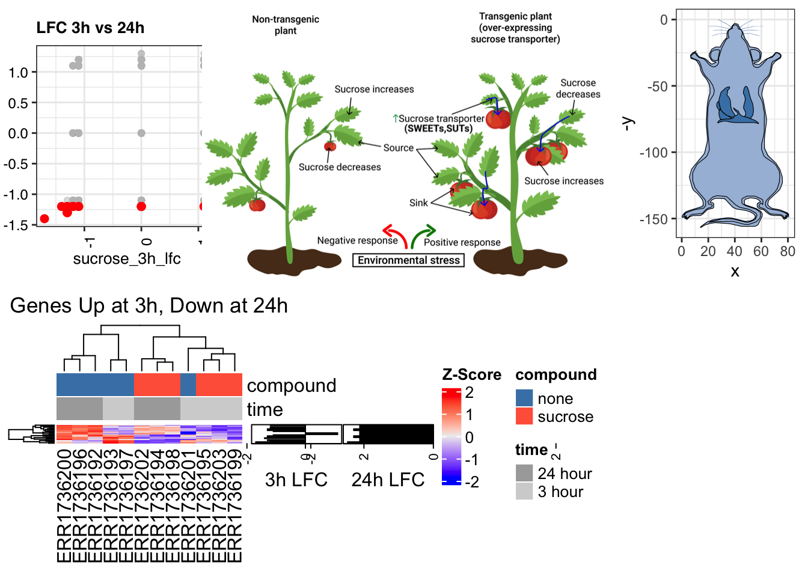

renv::install("ComplexHeatmap")
renv::install("circlize")
renv::install("dplyr")
renv::install("ggplot2")
renv::install("grid")
renv::install("gganatogram")
renv::install("cowplot")
renv::install("patchwork")
renv::install("RColorBrewer")
renv::install("egg")Exercise - Block 6
Learning Objectives
Upon completing this exercise block, you will be able to:
- Create and combine figures from different graphics systems:
- Construct complex, annotated heatmaps using the
ComplexHeatmappackage. - Combine plots from different systems (e.g.,
ComplexHeatmapandggplot2) into a cohesive figure usinggridgraphics.
- Construct complex, annotated heatmaps using the
Introduction
In this block, we will explore one of the most common visualizations in genomics: the heatmap. We will use the ComplexHeatmap package, a powerful and flexible tool for creating publication-quality heatmaps. We will also learn how to combine a ComplexHeatmap with a ggplot plot into a single figure, a common task in data visualization.
Installing packages
Packages
library(ComplexHeatmap)
library(circlize)
library(dplyr)
library(ggplot2)
library(grid)
library(gganatogram)
library(cowplot)
library(patchwork)
library(RColorBrewer)
library(egg)Exploratory data analysis
data <- readRDS(gzcon(url(
"https://raw.githubusercontent.com/urppeia/publication_figs/main/data.rds"
)))
rownames(data$counts) <- data$counts$Gene_ID
data$counts <- data$counts[, -1]Exercise 1: Constructing a Complex Heatmap
In this exercise, we will create a complex heatmap with multiple annotations. This will allow us to visualize the relationships between different variables in our data.
A. First, let’s prepare the data. We will scale the data and select the top 50 most variable genes.
B. Next, we will create a HeatmapAnnotation object for the columns that shows the compound and time for each sample. We will also define custom colors for the annotation levels.
C. Now, let’s “precision extract” a gene profile. We will find and visualize genes that follow a very specific biological pattern: genes that are activated early and then repressed later.
D. Let’s use row annotations to “explore” and visually confirm their behavior. We can add annotations that show the log-fold changes that we used for filtering.
E. Finally, let’s combine all the elements into a single heatmap.
Solution
# A: Prepare the data
mat <- as.matrix(data$counts)
mat_scaled <- t(scale(t(mat))) # Z-score scaling
gene_vars <- apply(mat_scaled, 1, var, na.rm = TRUE)
top_genes_var <- names(sort(gene_vars, decreasing = TRUE)[1:50])
mat_top_var <- mat_scaled[top_genes_var, ]
# B: Create a column annotation with custom colors
col_anno <- HeatmapAnnotation(
compound = data$anno$compound,
time = data$anno$time,
col = list(
compound = c("none" = "steelblue", "sucrose" = "tomato"),
time = c("3 hour" = "lightgrey", "24 hour" = "darkgrey")
)
)
# C: Extract genes matching the profile
profile_genes <- data$diff %>%
filter(
sucrose_3h_lfc > 1 & sucrose_3h_pval < 0.05 |
sucrose_24h_lfc < -1 & sucrose_24h_pval < 0.05
) %>%
pull(Gene_ID)
mat_profile <- mat_scaled[profile_genes, ]
# D: Create a row annotation
# First, get the LFC values for our profile genes
rownames(data$diff) <- data$diff$Gene_ID
lfc_data <- data$diff[profile_genes, c("sucrose_3h_lfc", "sucrose_24h_lfc")]
# The anno_barplot function requires all values in a row to have the same sign
# when given a matrix. To visualize both positive and negative LFCs for each
# gene, we create two separate barplot annotations, one for each time point.
row_anno <- rowAnnotation(
"3h LFC" = anno_barplot(
lfc_data[, 1],
gp = gpar(fill = "tomato"),
axis_param = list(at = c(-2, 0, 2))
),
"24h LFC" = anno_barplot(
lfc_data[, 2],
gp = gpar(fill = "steelblue"),
axis_param = list(at = c(-2, 0, 2))
),
width = unit(4, "cm")
)
# E: Combine with the heatmap
Heatmap(mat_profile,
name = "Z-Score",
top_annotation = col_anno,
show_row_names = FALSE,
column_title = "Genes Up at 3h, Down at 24h"
) + row_anno
Exercise 2: Combining ComplexHeatmap and ggplot
In this exercise, we will combine our ComplexHeatmap with a ggplot scatter plot. This is a common task when you want to present a global view of the data (the scatter plot) along with a detailed view of a specific subset of the data (the heatmap).
A. First, create a ggplot scatter plot of sucrose_3h_lfc vs. sucrose_24h_lfc for all genes.
B. On the scatter plot, color the genes that you selected in Exercise 1 to highlight them.
C. Use the grid package to combine the ggplot and the ComplexHeatmap from Exercise 1.
Solution
This is a complex task. ComplexHeatmap and ggplot2 use different graphics systems. We can’t use patchwork. We must use the base grid system to arrange them.
# A & B: Create the ggplot
p_scatter <- ggplot(data$diff, aes(x = sucrose_3h_lfc, y = sucrose_24h_lfc)) +
geom_point(color = "grey", alpha = 0.5) +
geom_point(
data = data$diff[profile_genes, ],
color = "red",
size = 2
) +
theme_light() +
labs(title = "LFC 3h vs 24h")
# C: Combine the plots
# 1. Draw the heatmap and get its object
ht <- Heatmap(mat_profile,
name = "Z-Score",
top_annotation = col_anno,
show_row_names = FALSE,
column_title = "Genes Up at 3h, Down at 24h"
) + row_anno
ht_grob <- grid.grabExpr(draw(ht))
# 2. Clear the page and set up a layout
grid.newpage()
pushViewport(viewport(layout = grid.layout(nrow = 1, ncol = 2, widths = unit(c(1, 1.5), "null"))))
# 3. Draw the ggplot in the first column
pushViewport(viewport(layout.pos.col = 1))
print(p_scatter, newpage = FALSE)
popViewport()
# 4. Draw the heatmap in the second column
pushViewport(viewport(layout.pos.col = 2))
grid.draw(ht_grob)
popViewport()
popViewport()
Setting a specific theme for plotting
data_cols <- brewer.pal(n = 6, name = "Paired")
hm_cols <- list(
compound = c(
none = data_cols[1],
sucrose = data_cols[2]
),
dose = c(
none = data_cols[3],
"15 millimolar" = data_cols[4]
),
time = c(
"24 hour" = data_cols[6],
"3 hour" = data_cols[5]
)
)
# Theme ----
th <- theme_bw(base_family = "Helvetica") +
theme(
plot.title = element_text(
colour = "black",
angle = 0,
size = 10,
face = "bold",
vjust = 1
),
plot.subtitle = element_text(
colour = "black",
angle = 0,
size = 10,
face = "plain",
vjust = 1
),
plot.caption = element_text(
colour = "black",
angle = 0,
size = 10,
face = "plain",
vjust = 1,
hjust = 0.5
),
axis.text.x = element_text(
colour = "black",
angle = 90,
size = 9
),
axis.text.y = element_text(
colour = "black",
angle = 0,
size = 9
),
axis.title.x = element_text(
colour = "black",
size = 10,
face = "plain"
),
axis.title.y = element_text(
colour = "black",
size = 10,
face = "plain"
),
legend.text = element_text(
colour = "black",
size = 9
),
legend.title = element_text(
size = 10,
face = "plain",
colour = "black"
),
strip.background = element_rect(
fill = NA,
colour = "black"
),
strip.text.x = element_text(
face = "plain",
colour = "black",
size = 10
),
strip.text.y = element_text(
face = "plain",
colour = "black",
size = 10
)
) +
theme(
panel.background = element_rect(
fill = "white"
),
panel.border = element_rect(
colour = "black",
fill = NA
),
strip.background = element_rect(
color = "black"
)
)Exercise 3: Including external images and gganatogram plots
In this exercise, we will include an image from the web and create a gganatogram plot.
A. Include the image from the web.
B. Create a gganatogram plot of mouse respiratory system.
# A: Include image from the web
img <- "https://mdpi-res.com/ijms/ijms-22-04704/article_deploy/html/images/ijms-22-04704-g004.png"
img_draw <- ggdraw() + draw_image(img)
img_draw
# B: Create gganatogram plot
mm_res <- mmMale_key %>%
dplyr::filter(type == "respiratory") %>%
gganatogram(outline = T, fillOutline = "#a6bddb", organism = "mouse", sex = "male", fill = "colour") +
theme_bw() +
coord_fixed()
mm_res
Exercise 4: Advanced setting of height and width of indivisual plots and combining all plots
In this exercise, we will combine all the plots we have created so far into a single panel.
A. Set the height and width of the scatter plot.
B. Combine the scatter plot, heatmap, web image, and gganatogram plot into a single panel.
Solution
# A: Set height and width of the scatter plot
p1 <- gridExtra::grid.arrange(
egg::set_panel_size(
p = p_scatter + th, width = unit(4, "cm"), height = unit(4, "cm")
)
)
# B: Combine all plots
gridExtra::grid.arrange(p1, img_draw, ht_grob, mm_res, ncol = 2)
gridExtra::grid.arrange(
p1, img_draw, mm_res,
ht_grob,
layout_matrix = rbind(
c(1, 2, 2, 3),
c(4, 4, 4, NA )
)
)
Session information
Tip
sessionInfo()R version 4.5.1 (2025-06-13)
Platform: aarch64-apple-darwin20
Running under: macOS Tahoe 26.1
Matrix products: default
BLAS: /Library/Frameworks/R.framework/Versions/4.5-arm64/Resources/lib/libRblas.0.dylib
LAPACK: /Library/Frameworks/R.framework/Versions/4.5-arm64/Resources/lib/libRlapack.dylib; LAPACK version 3.12.1
locale:
[1] en_US.UTF-8/en_US.UTF-8/en_US.UTF-8/C/en_US.UTF-8/en_US.UTF-8
time zone: Europe/Zurich
tzcode source: internal
attached base packages:
[1] grid stats graphics grDevices datasets utils methods
[8] base
other attached packages:
[1] egg_0.4.5 gridExtra_2.3 RColorBrewer_1.1-3
[4] patchwork_1.3.2 cowplot_1.2.0 gganatogram_1.1.1
[7] ggpolypath_0.4.0 ggplot2_4.0.0 dplyr_1.1.4
[10] circlize_0.4.16 ComplexHeatmap_2.24.1
loaded via a namespace (and not attached):
[1] generics_0.1.4 renv_1.1.5 shape_1.4.6.1
[4] digest_0.6.37 magrittr_2.0.4 evaluate_1.0.5
[7] iterators_1.0.14 fastmap_1.2.0 foreach_1.5.2
[10] doParallel_1.0.17 jsonlite_2.0.0 GlobalOptions_0.1.2
[13] BiocManager_1.30.26 scales_1.4.0 codetools_0.2-20
[16] cli_3.6.5 rlang_1.1.6 crayon_1.5.3
[19] withr_3.0.2 yaml_2.3.10 tools_4.5.1
[22] parallel_4.5.1 colorspace_2.1-2 GetoptLong_1.0.5
[25] BiocGenerics_0.54.1 curl_7.0.0 vctrs_0.6.5
[28] R6_2.6.1 png_0.1-8 magick_2.9.0
[31] matrixStats_1.5.0 stats4_4.5.1 lifecycle_1.0.4
[34] S4Vectors_0.46.0 htmlwidgets_1.6.4 IRanges_2.42.0
[37] clue_0.3-66 cluster_2.1.8.1 pkgconfig_2.0.3
[40] pillar_1.11.1 gtable_0.3.6 Rcpp_1.1.0
[43] glue_1.8.0 xfun_0.53 tibble_3.3.0
[46] tidyselect_1.2.1 knitr_1.50 farver_2.1.2
[49] rjson_0.2.23 htmltools_0.5.8.1 labeling_0.4.3
[52] rmarkdown_2.30 compiler_4.5.1 S7_0.2.0